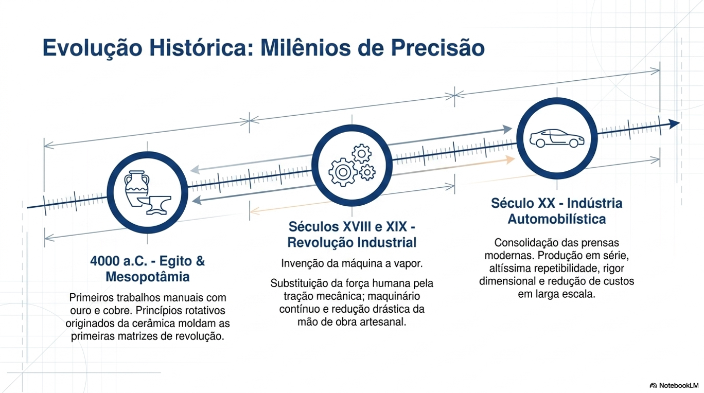
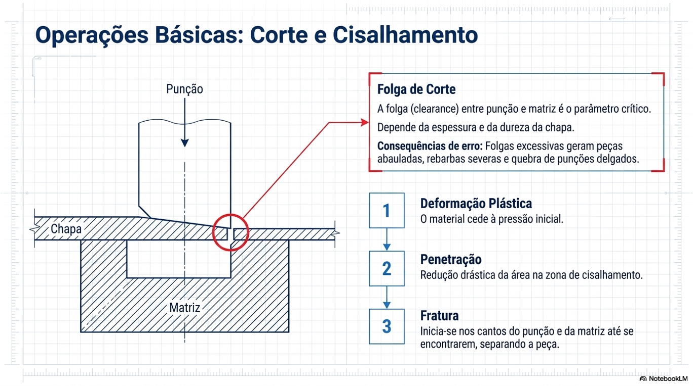

UNIVERSIDADE ESTADUAL PAULISTA "JÚLIO DE MESQUITA FILHO" - CAMPUS SOROCABA
Integrantes: Ariel Ben Lolo, Carlos Eduardo Alves, Diego Custodio Klein
Disciplina: Fabricação Mecânica
Professor: Prof. Dr. Felix Mauricio Escalante Ortega
Sorocaba - 2026

Acima da recristalização. Exige menor esforço mecânico e elimina trincas internas.
Abaixo da recristalização. Garante tolerâncias rigorosas e excelente acabamento.
| Parâmetro | Prensa Mecânica | Prensa Hidráulica |
|---|---|---|
| Velocidade de Golpe | Altíssima (Ciclos rápidos) | Lenta a moderada |
| Distribuição de Força | Pico máximo no final do curso | Constante em todo o curso |
| Aplicação Principal | Corte e estampagem rasa | Embutimento profundo (repuxo) |

Uso de fluidos hidráulicos sob pressões extremas para expandir chapas ou tubos dentro de uma matriz rígida.